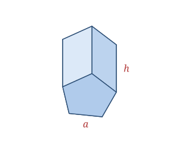

A pentagonal prism has two identical, parallel pentagonal bases connected by five rectangular faces. With regular pentagons for bases and sides perpendicular to them, it is a right regular pentagonal prism — the form of the wooden block in this set.
The most famous real-world example is the Pentagon building in Virginia, essentially a short pentagonal prism. You'll also find the shape in some pencils, nuts, and architectural columns.
A right regular pentagonal prism is defined by the base side a and the height h.
| Faces | 7 (2 pentagons + 5 rectangles) |
|---|---|
| Edges | 15 |
| Vertices | 10 |
| Base side | a |
| Height | h |
As a polyhedron it satisfies Euler's formula: V − E + F = 10 − 15 + 7 = 2.
Base area B = (1⁄4)√(5(5 + 2√5))·a² ≈ 1.7205a²
Base perimeter P = 5a
Volume V = B·h
Lateral SA LSA = P·h = 5ah
Total SA SA = 2B + 5ah
Take a pentagonal prism with base side a = 4 and height h = 10.
B = (1⁄4)√(5(5 + 2√5))·a² ≈ 1.7205 × 16 ≈ 27.53
V = B·h ≈ 27.53 × 10 ≈ 275.28
LSA = 5ah = 5 × 4 × 10 = 200
Total SA = 2B + 5ah ≈ 55.06 + 200 ≈ 255.06
The Pentagon — headquarters of the U.S. Department of Defense — is one of the world's largest office buildings, yet its pentagonal-prism design lets a person walk between any two of its farthest points in about seven minutes.